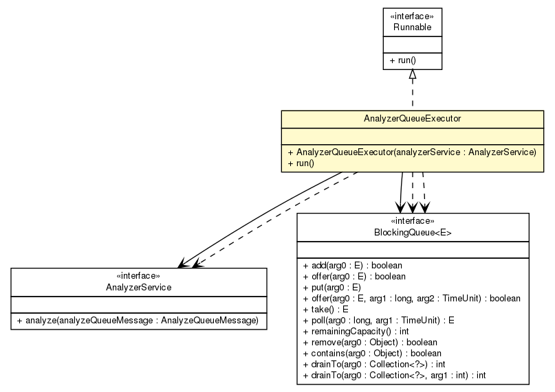

net.sereneproject.collector.utils
Class AnalyzerQueueExecutor

java.lang.Object
 net.sereneproject.collector.utils.AnalyzerQueueExecutor
net.sereneproject.collector.utils.AnalyzerQueueExecutor
- All Implemented Interfaces:
- Runnable
public class AnalyzerQueueExecutor
- extends Object
- implements Runnable
Simple Runnable class that consumes a MessageQueue and send
it to the appropriate AnalyzerService.
- Author:
- gehel
|
Method Summary |
void |
run()
Infinite loop that process messages. |
| Methods inherited from class java.lang.Object |
clone, equals, finalize, getClass, hashCode, notify, notifyAll, toString, wait, wait, wait |
AnalyzerQueueExecutor
@Autowired(required=true)
public AnalyzerQueueExecutor(com.npstrandberg.simplemq.MessageQueue queue,
AnalyzerService analyzerService)
- Construct the executor.
- Parameters:
queue - a queue of ProbeValueDateDtoanalyzerService - the service used to analyze probe values
run
public final void run()
- Infinite loop that process messages.
- Specified by:
run in interface Runnable
Copyright © 2012 Serene Project. All Rights Reserved.